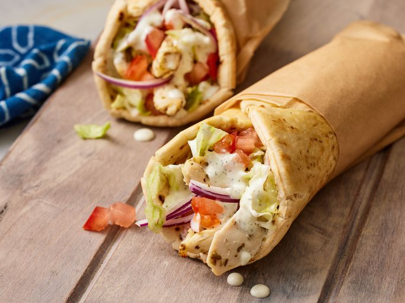

Easy Chicken Gyro

Description
Ingredients
Tzatziki
- 1 (16 ounce) container Greek yogurt
- 1 medium cucumber, peeled and coarsely chopped
- 2 cloves garlic, minced
- 1 tablespoon extra-virgin olive oil
- 1 ½ teaspoons dried dill weed
- 1 teaspoon distilled white vinegar
- 1 teaspoon lemon juice
- salt and ground black pepper to taste
Chicken
- 4 cloves garlic, minced
- 1 medium lemon, juiced
- 2 tablespoons extra-virgin olive oil
- 1 tablespoon dried oregano
- 2 teaspoons red wine vinegar
- salt and ground black pepper to taste
- 1 ¼ pounds skinless, boneless chicken breast halves - cut into strips
Gyro
- 6 (6 inch) pita bread rounds
- 1 medium tomato, diced
- 1 medium red onion, thinly sliced
- ½ head iceberg lettuce, chopped
Steps
- Gather all ingredients.
- Make the tzatziki: Combine yogurt, cucumber, garlic, oil, dill, vinegar, lemon juice, salt, and pepper in a blender. Blend until smooth, then cover and refrigerate until needed.
- Make the chicken: Whisk garlic, lemon juice, oil, oregano, vinegar, salt, and pepper together in a large glass or ceramic bowl. Add chicken and toss until evenly coated. Cover with plastic wrap and marinate in the refrigerator for 1 hour.
- Preheat the oven's broiler and set the oven rack about 6 inches from the heat source. Line a rimmed baking sheet with foil.
- Remove chicken from the marinade and place onto the prepared baking sheet.
- Broil in the preheated oven until lightly browned and no longer pink in the center, 2 to 4 minutes per side. Transfer cooked chicken to a plate and let rest for 5 minutes.
- While the chicken is resting, make the gyros: Heat a large nonstick skillet over medium heat. Cook each pita in the hot skillet until warm and soft, about 1 minute per side.
- Top warm pitas with chicken strips, tzatziki, lettuce, tomato, and onion.
- Enjoy!